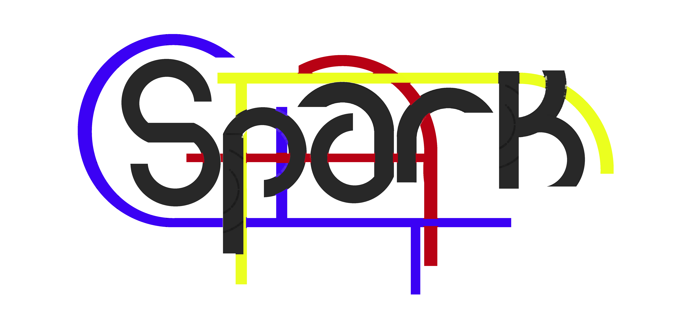

<DOCCTYPE html>
<html lang="en">
  <head background="bgimage.jpg">
    <meta charset="utf-8">
    <meta http-equiv="X-UA-Compatible" content="IE=edge">
    <meta name="viewport" content="width=device-width, initial-scale=1">
    <meta name="description" content=“WeHaveCake’s Spark registration page”>
    <meta name="author" content=“WeHaveCake”>
    <link rel="icon" href=“favicon.ico">

    <title>Register for Spark</title>

    <!-- Bootstrap core CSS -->
    <link href="../../css/bootstrap.min.css" rel="stylesheet">

    <!-- Custom styles for this template -->
    <link href="signin.css" rel="stylesheet">

    <!-- HTML5 shim and Respond.js IE8 support of HTML5 elements and media queries -->
    <!--[if lt IE 9]>
      <script src="https://oss.maxcdn.com/html5shiv/3.7.2/html5shiv.min.js"></script>
      <script src="https://oss.maxcdn.com/respond/1.4.2/respond.min.js"></script>
    <![endif]-->
  </head>

  <body background="background.jpeg">

<script src="https://github.com/tgriesser/knex/blob/master/browser/knex.js","https://github.com/tgriesser/knex/blob/master/browser/websql.js">


function registerAttempt(){

var valid = True;
var inputUsername = document.getElementById("user").text;
var inputEmail = document.getElementById("email").text;
var inputPassword1 = document.getElementById("pass1").text;
var inputPassword2 = document.getElementById("pass2").text;
var passHash = 0;

var usedUsernames = 0;
var usedEmails = 0;


//Database query stuff
var knex = require('knex')({
  client: 'mysql',
  connection: {
    host     : '54.77.214.91:’3306,
    user     : 'root',
    password : 'potatowithsalt',
    database : 'wehavecake'
  }
});

var pg = require('knex')({
  client: 'pg',
  connection: process.env.PG_CONNECTION_STRING
});


usedUsernames = knex.select(‘Username’).from(‘user’);
usedEmails = knex.select(‘E-Mail’).from(‘user’);


//Testing output
document.getElementById(“usernamesOutput”).innerHTML = usedUsernames;
document.getElementById(“emailsOutput”).innerHTML = usedEmails;

////Check validity

//Request data from database


// Ensure username is unique

//Ensure email is unique

//ensure password1 == password2

//Hash the password


//Save details if valid

knex('user’).insert({Username: inputUsername},{HashPass: password1},{E-Mail: inputEmail},{CurrentLocation: ‘NULL’});


//If valid
document.getElementById("registerResult").innerHTML = "Success";

//If invalid
document.getElementById("registerResult").innerHTML = "Registration Failed - please ensure you entered valid data";

}

</script>

     <center></center>
    <div class="container">

      <center><form class="form-register” role="form"></center>
        <h2 class="form-signin-heading">Please enter your details</h2>
        <input id="user" type=“username” class="form-control" placeholder="Username" required autofocus>
        <input id="email" type="email" class="form-control" placeholder="Email address" required>
        <input id="pass1" type="password" class="form-control" placeholder="Password" required>
        <input id="pass2" type="password" class="form-control" placeholder="Password (again)" required>
        <button class="btn btn-lg btn-primary btn-block" type="submit" onclick=“registerAttempt()”>Register</button>
      </form>

        <p id="registerResult"></p>
        <p id=“usernamesOutput”></p>
        <p id=“emailsOutput”></p>


        <center> Spark by WeHaveCake - Stefano Sesia, Seoras MacDonald & Andrew McCluskey </center>


    </div> <!-- /container -->


    <!-- IE10 viewport hack for Surface/desktop Windows 8 bug -->
    <script src="../../assets/js/ie10-viewport-bug-workaround.js"></script>
  </body>
</html>


